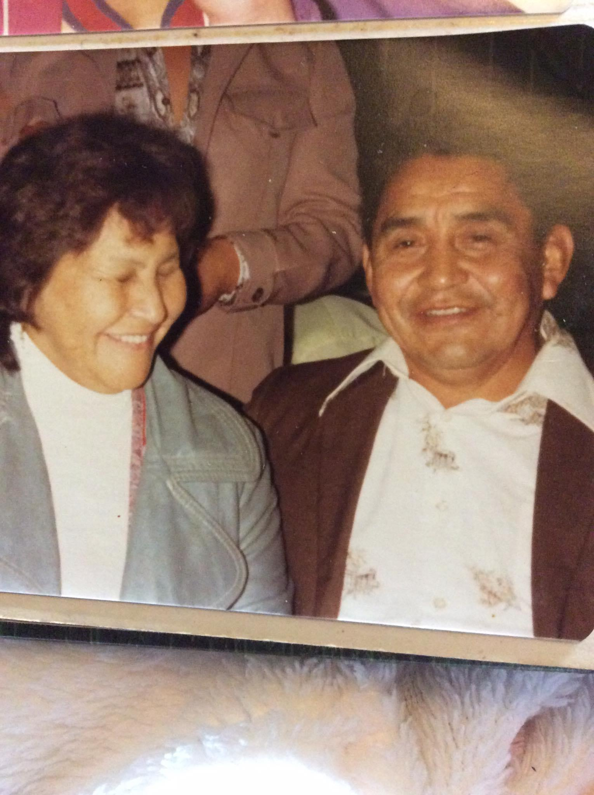
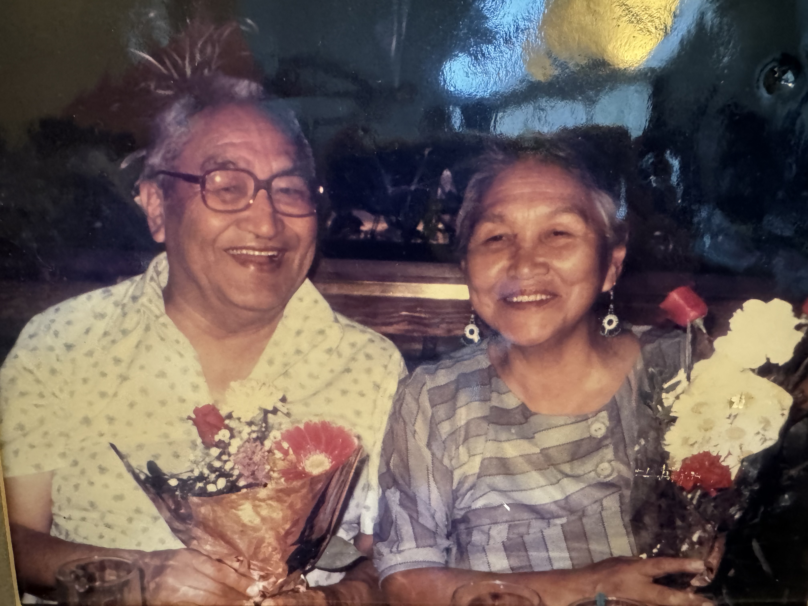

Julia Ignace & Ernest Campbell
My grandmother Julia Ignace is from hiškʷiiʔatḥ, my grandfather Ernest is from ʕaaḥuusʔatḥ. Together they have nine children and 30 grandchildren. From those 30 grandchildren, they have 64 great-grandchildren and upwards of 30 great-great-grandchildren. Listed below are their children and grandchildren
- Phyllis
- 6 children
- Selina
- 4 children
- Floyd Sr.
- 6 children
- Lyle-mit
- 4 children
- Darrell-mit
- 3 child
- Lory
- 1 child
- Ramona
- 3 children
- John
- Gord
- 3 children
Sarah Titian & Andrew Webster Sr.
My grandmother Sarah is from ʕaaḥuusʔatḥ, my grandfather Andrew is from ʕaaḥuusʔatḥ, as well. Together they have 11 children and 41 grandchildren. They have 168 great-grandchildren and upwards of 40 great-great-grandchildren. Listed below are their children and grandchildren.
- Christina-mit
- Helena-mit
- 4 children
- Mary Jane
- 5 children
- Andrew Jr.
- 7 children
- Norman-mit
- 3 children
- Charles-mit
- 2 children
- Sandra
- 3 children
- Henderson
- 3 children
- Marion
- 6 children
- Glen Sr.
- 5 children
- Tuesday
- 4 children
Key Terms for Family Titles
- mother - ʔum̓ʔiiqsu
- father - nuw̓iiqsu
- grandmother - naniiqsu
- grandfather - naniiqsu
- aunt - naʔiiqsu
- uncle - naʔiiqsu
- niece - ʔaasiiqsu
- nephew - wiiʔuu
Numbers
- one - c̓awaak
- two - ʔaƛa
- three - qacc̓a
- four - muu
- five - suč̓a
- six - n̓upu
- seven - ʔaƛpu
- eight - ʔaƛakʷał
- nine - c̓awaakʷał
- ten - ḥayu